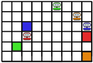
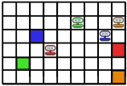
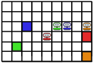
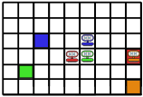
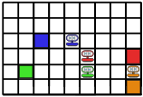
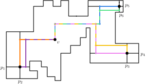
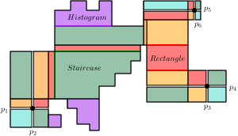
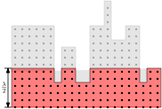
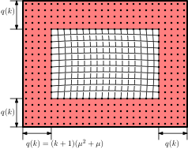
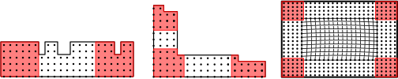

Large Warehouses (e.g., Amazon) require efficient relocation of items
Amazon KIVA robots (2012)
Robots must move items to target locations without hitting other robots
Robots can move simultaneously (in parallel)
Input: \(k\) robots placed on a graph $G$. A robot $R_i$ has starting position $s_i$ and destination $t_i$.
Dynamics: In each time step, each robot may move along an edge provided that there is no collision.
Goal: Find a schedule for the robots so as to minimize a certain objective target such as:
Task-completion time (makespan): schedule length
Total travel length or total energy: The sum of the trajectories’ lengths
Input: \(k\) robots placed on a graph $G$. A robot $R_i$ has starting position $s_i$ and destination $t_i$.
Dynamics: In each time step, each robot may move along an edge provided that there is no collision.
Goal: In this talk we consider minimizing:
Total travel length or total energy: The sum of the trajectories’ lengths





CMP has been extensively studied over the last four decades by researchers in computational geometry, artificial intelligence and robotics
Annual workshops affiliated with the top AI conferences (e.g., AAAI, IJCAI) dedicated to CMP
Posed as The Symposium on Computational Geometry (SoCG 2021) Challenge
Many algorithms, heuristics, websites, benchmarks, etc, dedicated to CMP
Many settings/variants:
Combinatorial: grids, subgrids and graphs
Geometric: Euclidean plane w/o obstacles (robots are geometric shapes)
Different conflict notions, stay/disappear on target ...
Labelled/unlabelled, sliding/translation
Most of the settings are NP-hard even on very restricted instances such as grids and trees.
A parameterized problem \(Q\) is fixed-parameter tractable (FPT) if it can be solved in time \(f(\kappa) \cdot |I|^{{\mathcal O}(1)}\), where \(f\) is a computable function, \(\kappa\) is the parameter(s), and \(|I|\) is the input instance size.
Theorem (EGK, SoCG'23): Given instance of CMP on full rectangular grid, there is an optimal schedule, where each robot makes at most $k^{\mathcal{O}(k^2)}$ turns.
Theorem (DEGKR, ICALP'24): An instance of CMP can be reduced in FPT time to an equivalent instance in which $\ell \le \sum_{i \in [k]}$dist$(s_i, t_i) + c \cdot k^5$, for some constant $c > 0$.
Theorem (DEGKR, ICALP'24): CMP is fixed-parameter tractable parameterized by $k$ + treewidth.
Theorem: CMP is FPT parameterized by $k$ on graphs induced by discretized simple polygons.
Main ingredients of the proof:
We can assume that :
- No robot $R_i$ travels more than $\lambda = ck^5$ beyond shortest $s_i$-$t_i$ path.
- For each robot $R_i$ and for each rectangle (i.e., full rectangular grid) $B$ in $G$, the number of turns that $R_i$ makes in $B$ plus the number of vertices in $B$ at which it waits is at most $\mu=k^{\mathcal{O}(k^2)}$.

The bend vector of the vertex $v$ is $(2, 1, 4, 3, 3, 4)$.

Lemma: For any terminal $t$ and a vertex $v$ in a sector $S$, there is a shortest $t$-$v$ path that intersects a baseline of $S$.

Lemma: There exists an optimal solution that does not visit any vertex in a staircase sector at distance at least $(k+1)(\lambda+1)$ from a baseline.
Let the second frame $S^*$ of sector $S$ be the subgraph of $S$ obtained by removing the top, bottom, left, and right $ (k+1)(\mu^2+\mu)$ rows and columns.
Lemma: If $\mathcal{I}$ is YES-instance of CMP, then there is optimal solution in which every robot enter second frame at most once and never turns or waits inside.

We bound treewidth in two steps.

Is CMP on subgrids, or more generally planar graphs, FPT? (by $k$ w.r.t either energy of makespan)
Is minimizing makespan FPT by $k$+treewidth?
Study the FPT of CMP in the Euclidean plane, where the robots are disks/rectangles? (Recently Kanj and Parsa gave FPT for rectagles with axis-parallel translations)
Implementation of the FPT algorithms